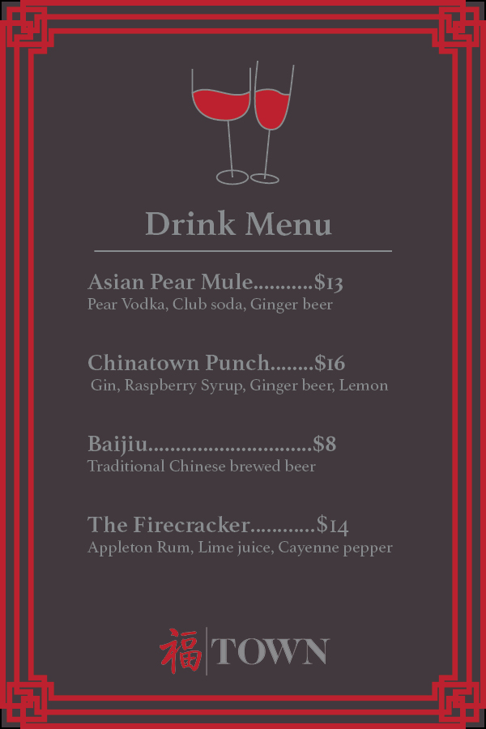
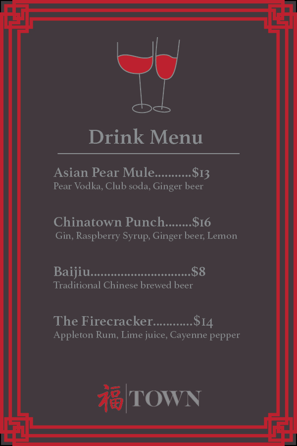

Print Media

For this project, I worked with print design and created a magazine page for a Japanese wood-blocking article. I created this piece in Adobe InDesign
I created a brand identity and primarily created print designs for a Chinese restaurant called TOWN. I created the cocktail menu icon in Adobe Illustrator and finished the rest of the project in Adobe InDesign.
 

In this project, I was to recreate possible magazine covers for a celebrity of my choice, I used a picture of a K-pop star from BTS. I created two simple and timeless magazine covers of him. For this Vogue cover, I had to make the Vouge Type from scratch in Adobe Illustrator, match the color and match to his blue shirt, and ensure it was formatted correctly in Adobe Photoshop.